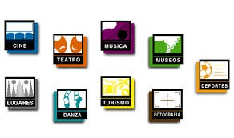

Abancaycito es una WebSite de entretenimiento, ventas, turismo, publicidad y demas opciones, creada con la unica necesidad de unir a todos los Abanquinos(as) en solo lugar esten en donde esten, haciendo que las barreras geograficas se rompan y de esa manera mantener siempre unidas a las personas mas alegres del Perú a los Abanquinos.
¿Que mas puedo Encontrar?
Abancaycito ofrece los servicios de publicidad online de productos, promociones, marcas, etc. Rutas turisticas en los bellos lugares que ofrece la region de Apurimac y Tambien ofrece los servicios de ventas online de productos de la mas alta calidad originarios del Departamento de Apurimac como son: tejidos, artesanias, trajes tipicos, calzados, tallarines de casa y demas. Abriendo el mercado nacional y internacional para los Apurimeños.

Entretenimiento
Comparte todo lo bello de nuestra hermoza tierra con el resto del mundo, sube fotos, compartelas y comentalas con todos tus amigos, y haz que los Abanquinos/Apurimeños que estan lejos se sientan como en casa atraves de esta red social, demuestrale al mundo lo bello y hermozo que es sentirse ser Apurimeño.